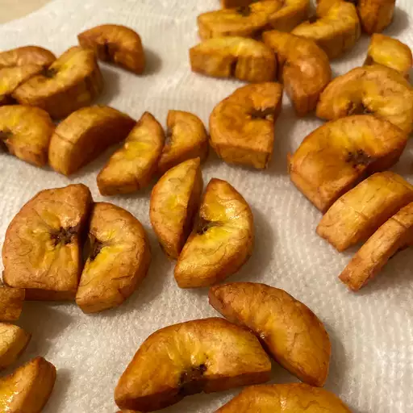

Home
Fried Plantain

Description of the recipe:
Ingredients
- 2 cups oil for frying, or as needed
- 2 large plantains
Steps
- Preheat oil in a large, deep skillet over medium-high heat.
- Peel plantains. Cut in half crosswise, then cut each half lengthwise into thin pieces.
- Working in batches, fry plantains in the hot oil until browned and crispy on the outside and tender on the inside, 2 to 3 minutes per side. Drain on a paper towel-lined plate.